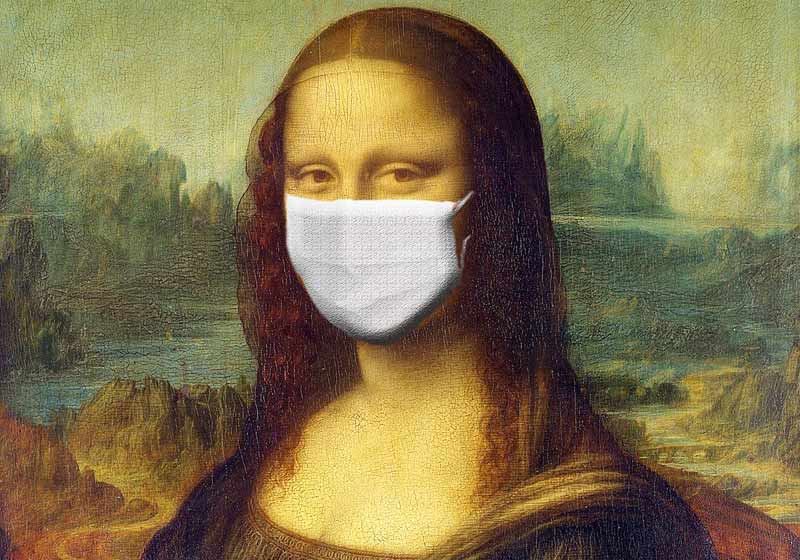

Covid-19 - Notícias
Home
Sobre
Contato
Saiba Mais

Coronavírus: Itália e Alemanha dão sinais de que o pior já passou
> <h1 class="card--title"> A telemedicina durante a pandemia</h1>
<h1 class="card--title"> Resumo R7 tira dúvidas sobre o coronavírus</h1>
Dalai Lama pede mais compaixão do que oração pra enfrentar coronavírus
<h1 class="card--title"> A telemedicina durante a pandemia</h1>
> <h1 class="card--title"> A telemedicina durante a pandemia</h1>